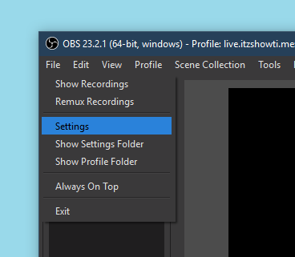
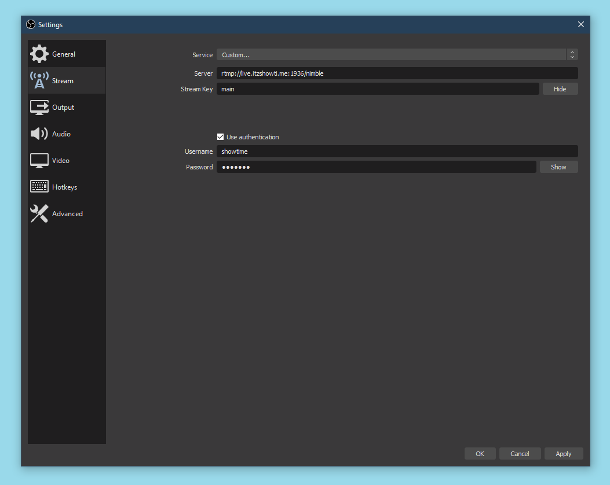

1. Under settings:
2. Open the Stream sub-menu
2.a. Set Stream Type to Custom...
2.b. Into URL, paste
2.c. Into Stream Key enter main, movies or marathon for the channel you want to stream to
2.d. Check Use Authentication
2.e. Enter the login details you were provided
Please use OBS Studio. Open Broadcaster Software is no longer supported or maintained.